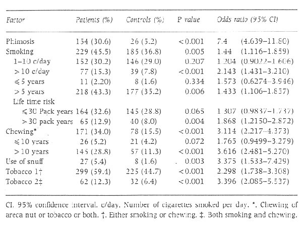

THE CIRCUMCISION REFERENCE LIBRARY
K. HARISH and R. RAVI
Department of Genito-urinary Surgery, Cancer Institute (WIA), Adyar, Madras,
India
Objective: To study the role of tobacco in squamous cell carcinoma of the penis.
Subjects and methods The use of tobacco in the form of cigarettes, chewing tobacco and snuff was studied in a total of 503 patients and age-matched controls.
Results By multivariate analysis, a significant association was found between smoking (P = 0.002) or chewing tobacco (P < 0.001) and the use of snuff (P = 0.004) in patients with penile carcinoma as compared with controls. A dose-response relationship was observed for both smoking and chewing.
Conclusions The use of tobacco is a significant risk factor for penile carcinoma, and the use of more than one form of tobacco increases this risk.
Keywords squamous cell carcinomas, squamous cell carcinoma, tobacco, chewing, smoking, snuff
Introduction
Penile cancer has a world-wide distribution, with a low incidence among Muslims and infrequent occurrence among Jews due to religious circumcision. It incidence varies in different parts of the world and is reported to be 0.5 to 1.5 per 100 000 population in the western world [1]. In Southern India, the average annual rate is 2.9 per 100 000 population (Madras Metropolitan Tumour Registry, Cancer Institute. Madras, India).
Phimosis has been shown to be a significant factor in the aetiology of penile cancer [2]. Sexually transmitted diseases have been proposed as aetiological factors, but with no definite proof [3]. Tobacco has been shown to affect many organ systems in the body. Although only the upper aerodigestive and respiratory tracts come in direct contact with carcinogens, smoking has also been shown to increase the risk of distant tumours such as cancer of the uterine cervix [4]. There are a few reports relating smoking to genito-urinary and penile cancers [1,5-7]. In India, apart from smoking, tobacco is used on other forms such as chewing tobacco and snuff.
The aim of the present study was to determine the role of tobacco in the causation of penile carcinoma.
Subjects and methods
A total of 505 patients with squamous cell carcinoma of the penis, who were registered at the Cancer Institute (WIA), Madras, between 1960 and 1990, and 600 controls selected at random from amongst the partners of patients with breast cancer, were included in the study. Data collected included subject age, presence or absence of phimosis, and the use of tobacco in the form of cigarettes, chewing tobacco or snuff. The number of cigarettes smoked and length of smoking were noted, as were the use of areca nut, tobacco or both and the duration of use. Each patient was age-matched with a control. The matching was done on a computer using only the patient index number and age. Any unmatched patients and controls were excluded from the study. The final data were analysed for 503 patients and 503 age-matched controls.
Initial signifance tests were carried out for each factor separately and then a multivariate analysis was performed with the Conditional Logistic Regression Model for matched data.
Results
The results of the study are given in Table 1.
Phimosis was an important risk factor for penile carcinoma, with 30.6% of patients having phimosis as against 5.2% of controls (odds ratio [OR] 7.4 [P<0.001]).
 Table 1 Relationship between the use of different forms of tobacco and penile carcinoma
Tobacco in the form of cigarettes was a risk factor for penile carcinoma (OR=1.44, P=0.005). No significant association was observed in those who smoked <10 cigarettes per day or those who had smoked for <5 years, whereas a significant amount of risk was seen for those who smoked >10 cigarettes a day and those who had smoked for >5 years. A significant association was noted with a lifetime exposure to >30 pack years.
Chewing tobacco was a significant risk factor for penile carcinoma, with 34.0% of patients in the habit of chewing tobacco as against 15.5% of controls (OR = 3.114, P<0.001). A total of 159 of 171 patients (93.0) chewed both areca nut and tobacco. Therefore it was not possible to adjust for confounding of one of the factors.
Of the patients, 5.4% took snuff as against 1.6% of controls. (OR = 3.396, P = 0.003).
The effect of tobacco was analysed by considering smoking and chewing. A total of 59.4% of patients either smoked or chewed tobacco and 12.3% of patients used both. Either habit was a risk factor (OR = 2.298, P<0.001), and a combination of both habits carried a higher risk (OR = 3.396, P<0.001).
A multivariate analysis was carried out by the Conditional Logistic Regression Model to adjust for the confounding effects of each of the factors analysed. The results are shown in Table 2. All factors were found to be significant.
As the effects of areca nut and tobacco could not be differentiated, a similar analysis was carried out as in Table 2 but with tobacco chewing as a factor instead of chewing. Tobacco chewing was found to have a significant association with penile carcinoma (Table 3).
Discussion
In this study, the association between the three commonly used forms of tobacco (cigarettes, chewing tobacco and snuff) and squamous cell carcinoma of the penis has been analysed. Earlier studies have reported that smoking is a risk factor for squamous cell carcinoma of the penis [1,5-7], but the overall impact of tobacco on penile cancers has thus far not been analysed in detail.
All forms of use of tobacco were found to be significant risk factors for penile carcinoma, even after adjusting for their confounding. A clear dose-relationship response for smoking and chewing was observed, although it was not possible to differentiate between the effect of areca nut and tobacco. In view of tobacco being a proven carcinogen, and also because similar results were obtained in the multivariate analysis when tobacco chewing was analysed as a factor instead of chewing, we believe that tobacco was the important agent and areca nut may at best be a potentiating agent. Data on the frequency of chewing and duration of retention of quid in the oral cavity were not available for analysis. The effect of all three forms of tobacco used together could not be studied as only three patients used all three forms of tobacco. Use of more than one form of tobacco carried a higher risk, as evidenced by an OR of 2.298 for patients with one habit and an OR of 3.396 for patients who both smoked and chewed tobacco.
It has been hypothesized that tumours of the anogenital region, such as those of the utererine cervix, vulva, vagina, anus, and penis, have common and similar aetiological factors [8]. Smoking has been shown to increase the risk of cancers of the uterine cervix, urinary bladder and penis. Chemical analysis of smokeless tobacco indicates that three types of known carcinogens -- N-nitrosamine, polycylic aromatic hydrocarbons and Polonium-210 -- are present. The nitrosamines are metabolized in vivo to products shown to produce genetic changes in cells and also to produce tumours [9]. A higher availability of tobacco-specific nitrosamine to a snuff dipper has been suggested [10,11]. A role for nicotine as an inhibitor of apoptosis and subsequent tumor promotion has been proposed [12]. It has been claimed that cigarette smoke exposure may increase the extent of DNA damage per mutagenic event in bladder cancer [13]. A similar event may apply to other cancers as well. A tobacco-specific nitrosamine 4-(methylnitrosamiol-1-(3-pyridyl)-1-butanone (NNK) was found in the urine of smokers [14]. NNK metabolism takes place in a few tissues and is eventually excreted largely in the urine and to a smaller extent in saliva, faeces and secretions from preputial glands [15]. Accumulation of carcinogens in smegma may be an important factor. Another support for a remote mode of action of smoking is its role as in immunosuppressant by reducing the number of Langerhans' in a linear fashion. Langerhans' cells are dendritic epithelial cells which play an important role in immune surveillance and in the response to neoplastic transformation [16].
In summary, the use of tobacco in any form is a risk factor for penile carcinoma. Tobacco may exert its action through its metabolites, or directly after systemic absorption. Use of more than one form of tobacco multiplies the risk of development of penile carcinoma.
References
1
Dailing JR, Sherman KJ, Hislop TG et al. Cigarette
smoking and the risk of anogenital cancer. Am J
Epidemiol 1992;135:180-9
2 Muir CS, Nectoux J.
Epidemiology of cancer of the testis and penis. Natl
Cancer Inst Monogr 1979; 53: 157-64
3 Schrek R, Lenowitz H.
Aetiologic factors in carcinoma of the penis. Cancer
Res 1947: 7: 180
4 Winkelstien W.
Smoking and cervical cancer-current status: a review. Am J
Epidemiol 1990; 131: 945-57
5 Harris RE, Hebert JR,
Wynder EL. Cancer risk in male veterans utilising the
Veterans Administration Medical System. Cancer 1989;
64: 1160-8
6 Bosch FX. Cardis E.
Cancer incidence correlations: genital, urinary and some
tobacco-related concerns. Int J Cancer 1990;
46: 178-84
7 Hellberg D, Valentin
J, Eklund T, Nilsson S. Penile cancer: is
there an epidemiological risk for smoking and sexual
behaviour? Br Med J 1987; 295: 1306-8
8 Peters RK, Mack TM,
Bernstien L. Parallels in the epidemiology of selected
anogenital carcinomas. Natl Cancer Inst 1984;
72: 609-15 [PubMed]
9 Mattson ME, Winn DM.
Smokeless tobacco association with increased cancer risk.
Natl Cancer Inst Mongr 1989; 8: 13-16 [PubMed]
10 Protokoczyk B, Wu M, Cox JE,
Hoffman D. In vitro studies on biological availability of
tobacco-specific N-nitrosamines to the smokeless tobacco
user. Proc Annu Meet Am Ass Cancer Res 1992:
33: A867 (meeting abstract)
11 Prokopczyk B, Wu M, Cox JE,
Hoffman D. Bioavailability of tobacco specific N-nitrosamines
to the snuff dipper. Carcinogenesis 1992: 13:
863-6 [Abstract]
12 Wright SC, Zhong J, Zheng H,
Larrick JW. Nicotine inhibition of apoptosis suggest a role
in tumor promotion. FASEB J 1993; 7:
1045-51
13 Spruck CH, Rideout WM, Olumi
AF et al. Distinct pattern of p53 mutations in bladder
cancer: relationship to tobacco usage. Cancer Res
1993: 53: 1162-6 [PubMed]
14 Hect SS, Akerkar S, Carmnella
SG. Metabolites of tobacco specific nitrosamine
4-(methylnitrosamino)-1-(3-pyridyl)-1-butanone in smokers
urine. Proc Ann Meet Am Ass Cancer Res 1993:
34: A909 (meeting abstract)
15 Castonguay A, Tjalve H, Hecht
SS. Tissue distribution of tobacco specific carcinogen
4-(methylnitrosamino)-1-(3-pyridyl)-1-butanone and its
metabolites in F244 rats. Cancer Res 1983: 43:
630-8
16 Muller HK, Halliday GM, Knight
KA. Carcinogen-induced depletion of cutaneous Langerhans
cells. Br J Cancer 1985; 52: 81-5 [PubMed]
Authors
K. Harish, MS, DNB, Postgraduate
R. Ravi, MS, MCh (Urology), Associate Professor.
Correspondence: Dr R. Ravi, Department of Urology, St
Bartholomew's Hospital, London EC1A 7BE, UK
http://www.cirp.org/library/disease/cancer/harish/